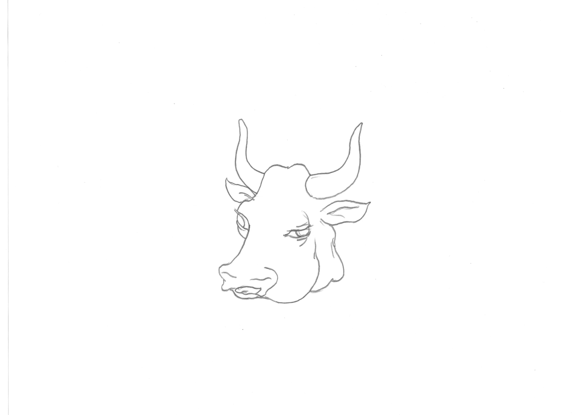
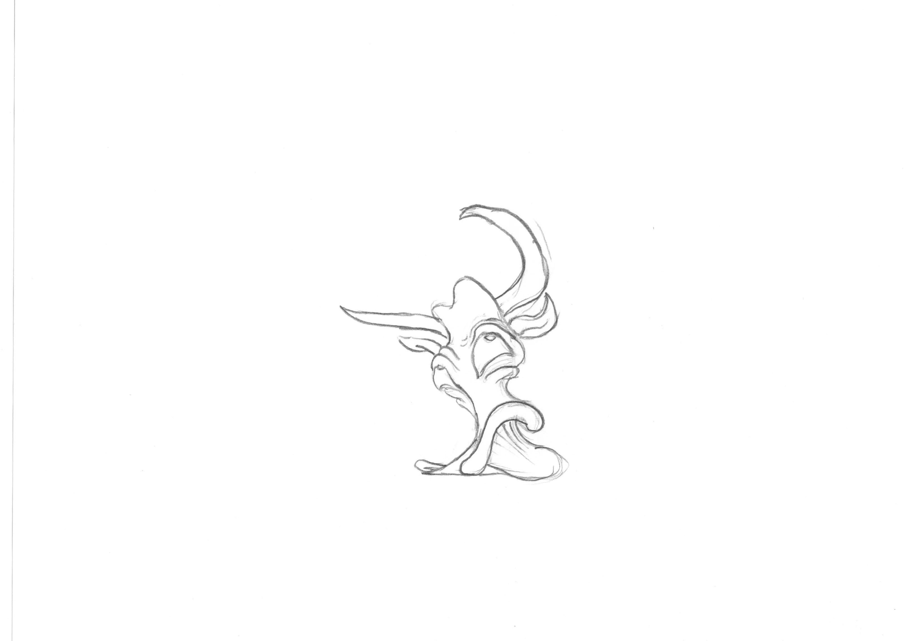
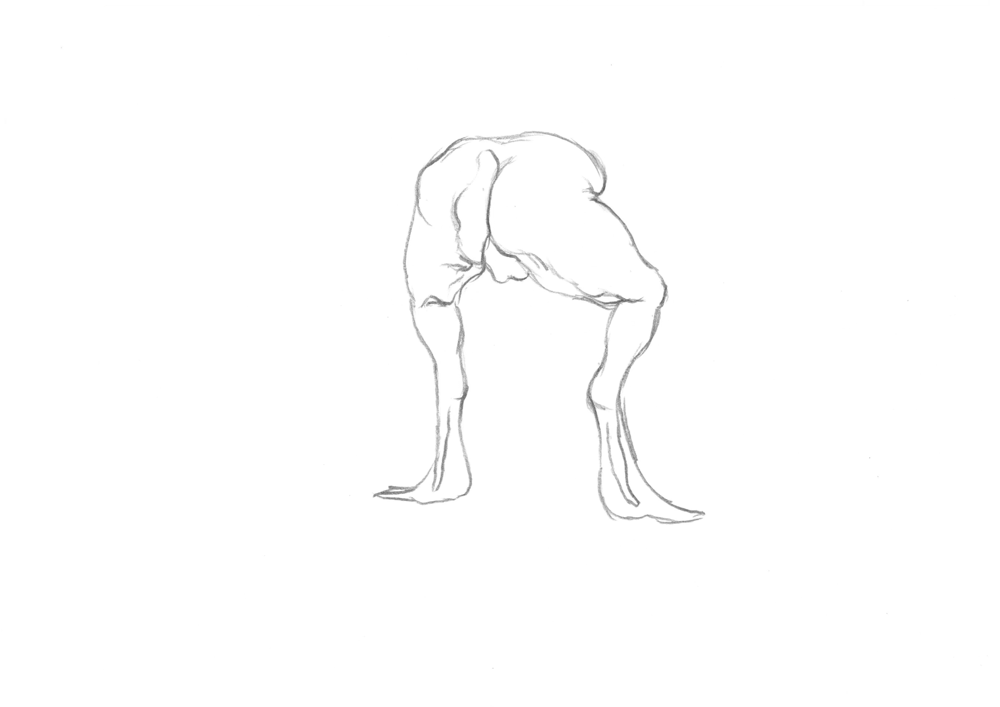

David Tobias Bonde Jensen & Kim Laybourn
YOWL
Hvis du ved et uheld træder på din kats hale, vil du formentlig høre dens YOWL. Stakkels kat.
I video animationen er figurerne inspireret og lånt fra illustrationerne af Giovanni Aldini’s demonstrationer af galvanisme. Aldini’s onkel; Luigi Galvani forskede i slutning af 18 hundrede tallet i stimuleringen af nerver med elektricitet, efter en assistent ved et uheld fik et par frøben til at bevæge sig, han mente at det beviste eksisten af en animalsk elektricitet. Mary Shelley´s Frankenstein; or the Modern Prometheus skulle eftersignende have været inspireret af hans undertsøgelser.
Den første sang fætrene Kim Laybourn og David Tobias Bonde Jensen skrev, handlede om en kat, og deres fokus er den dag i dag stadig på det animalske. Lydværket blev udviklet med udsigten til den fynske have, hvis planter og træerne satte et hæsblæsende liv i en mættet voldsgrøn vegetation i det stormfulde sommervejr, dette fungerede som dirigenter for musikke. YOWL er et sidste skrig fra et musikalsk og lydmæssigt samarbejde igennem 18 år.
-Thomas Bremerstent
David Tobias Bonde Jensen (b. 1988, Denmark) graduated from Oslo National Academy of the Arts in 2020. His practice examines speculative subjectivities, fictive motifs and the ontological ruptures between body, media and technology through experiments with video, animation, sound and text. His work has recently been exibited at Struktura-Time, The Wrong Biennale 2019/2020 (Online).
Kim Laybourn (b.1988) graduated from the master’s degree program at the Oslo Art Academy in spring 2019, and is currently the recipient of the FKDS studio grant at the Kunstnernes Hus. Laybourns practice spans across installation, sound and music, text, sculpture, photography, print, animation, cgi and video. His work has previously been exhibited at PODIUM (Oslo), Kunstnernes Hus (Oslo), Ta-da (Copenhagen), Galleri CC (Malmö), Struktura-Time, The Wrong Biennale 2019/2020 (Online), Supermarket Art Fair (Stockholm), and Kunsthal Charlottenborg (Copenhagen), Studio 17 (Stavanger) and recently at SOL (Nexø).
YOWL David Tobias Bonde Jensen & Kim Laybourn 2020



Body Study II - Video stills David Tobias Bonde Jensen 2020